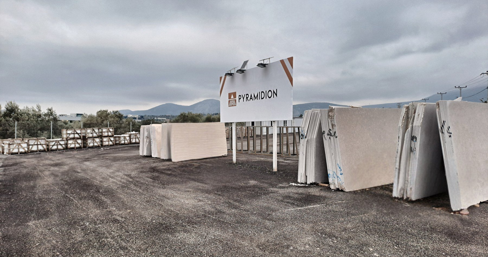

Stone is chosen before it is cut.
Pyramidion selects natural stone at the quarry and supplies it to architects, designers, contractors and importers in Greece and across Europe. Marble, limestone, basalt and granite, as blocks, slabs, tiles, wall cladding and carved stone. The main range is kept at Koropi and cut to suit the project; every lot is inspected before shipping and delivered with its technical data.

The yard at Koropi, 3rd km Leoforos Markopoulou.
50+
years of experience in natural stone6+
source countries, from Egypt to Brazil300 × 195
cm, the largest slab format held in stock1 – 20
cm, thickness cut to the projectHow we work
Three commitments
At the quarry
Blocks are selected on site for structure, colour and grain. What is rejected there never reaches the yard.
With the data
Every stone is described by its geology, not its trade name, with laboratory test values. A lot-specific test report is issued with each order.
To the site
Packed to ISPM 15, photographed before departure, delivered by sea or road to the address on the drawing.